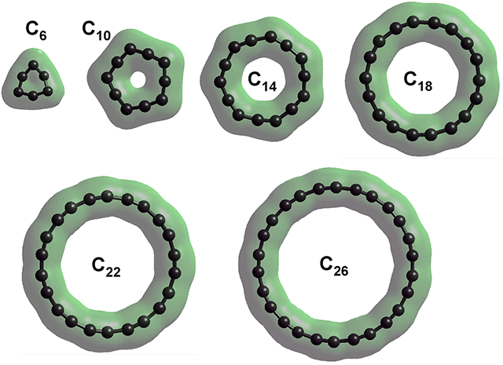
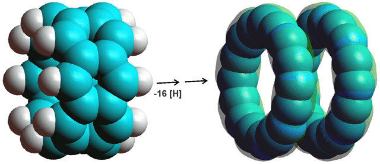

Cyclo[18]carbon (C18) (0rbital 37)
The cyclo[18]carbon (C18) structure involves an alternating charged carbon structure in contrast to the uncharged structures commonly described.
The synthesis of one molecule of the sp-hybridized molecular carbon allotrope, cyclo[18]carbon (C18), a has generated topical interest in its structure. It is generally accepted that C18 forms a planar ring and may be either cumulenic with D9h (Figure 1a) or D18h symmetry (Figure 1b) with all bond lengths equal or polyynic with C9h symmetry (Figure 1c) with alternating different bond lengths, c, d. The polyynic form has been found in the newly synthesized C18, using high-resolution atomic force microscopy.a This agrees with theoretical approaches. f
Figure 1. Quantum chemistry calculated structures for cyclo[18]carbon; a, D9h cumulenic; b, D9h cumulenic;
c, C9h polyynic; d, the result of Restricted Hartree-Fock wave function (RHF) utilizing the 6-31G** basis set
![Quantum chemistry calculated structures for cyclo[18]carbon](images/cyclocs.gif "Quantum chemistry calculated structures for cyclo[18]carbon")
The ground-state structures may also exhibit aromaticity with the carbon ring generating two sets of C4N+2 electron rings in the plane of the ring and at right–angles to the plane b, e, as in Figure 1d. Whilst all the structures considered in the previous literature (Figure 1a, b, c) result in the carbon atoms being uncharged and equivalent, it has come as a surprise that if the structure is treated at the level of Restricted Hartree-Fock wave function (RHF) utilizing the 6-31G** basis set, and starting from a randomly placed ring structure, the carbon atoms are alternately positively charged (+0.38 e-) and negatively charged (-0.38 e-).The bond lengths alternate 1.3787 Å and 1.1978 and the bond angles alternate 163.3 ° (- + -) and 156.7 ° (+ - +). Clearly, the structure may converge to two possible forms, both where any pre-set carbon atom ends up as either positive or negative. Although this structure may be tconsidered as an intermediate form, it is a stable structure existing in a broad energy valley. These parameters (Figure 1d) should be compared with those for the DFT-B3LYP/6-31G* g as shown in Figure 1a, b, c. The bond angles in Figure 1d are identical to those given,f using HF/6-31G*, for the polyacetylenie structure (156.7' and 163.3'). The 3-D isosurface of the total charge density is shown at the top right of the page, where it can be seen to be similar to that given in the AFM image in Figure 3 of a). This poly-charged structure would be liable to charged interactions with itself and other molecules in addition to the van der Waals forces previously considered.
In order to establish this structure for C18, the structures of several cyclocarbons, C6, C10, C14, C18, C22, and C26, were calculated. The structures of C6 and C10 were more angular than the others, but still have equal bond lengrhs.
| Cyclocarbon | n | Diameter | r1 , Å | r2, Å | "+ - +", ° | "- + -", ° | C, alternating charge | |
| C6 | 6 | 2.55 Å | 1.3164 | 1.3164 | 149.57 | 90.43 | +0.031 | -0.031 |
| C10 | 10 | 4.08 Å | 1.2902 | 1.2902 | 119.35 | 168.65 | +0.073 | -0.073 |
| C14 | 14 | 5.74 Å | 1.2172 | 1.3591 | 139.8 | 168.8 | +0.242 | -0.242 |
| C16 | 16 | 6.67 Å | 1.1978 | 1.3828 | 152.2 | 162.8 | +0.34(6) | -0.34(6) |
| C18 | 18 | 7.42 Å | 1.1978 | 1.3787 | 156.7 | 163.3 | +0.38(2) | -0.38(2) |
| C22 | 22 | 9.05 Å | 1.196 | 1.3788 | 161.5 | 165.8 | +0.44(4) | -0.44(4) |
| C26 | 26 | 10.68 Å | 1.195 | 1.378 | 164.5 | 167.8 | +0.49(6) | -0.49(6) |
Cyclocarbon total charge densities

Rather counter-intuitively, belterene-type structures (for example, see (C6H2.C2H2)4 below left) dissociate into two C16 rings (see below right) if the hydrogen atoms are removed (by modeling using the Restricted Hartree-Fock wave function (RHF) utilizing the 6-31G** basis set)
Poly-arenes, e.g., (C6H2.C2H2)4 dissociate, if the hydrogen atoms are removed

C14 cluster as part of the
structure of diamond
Carbon-only structures with identical topologies as the oxygen atoms in the water ices are also possible. Thus, diamond (see right) has the same topology as cubic ice (and the tetrahedral water cluster as part of {(H2O)14}20, consisting of 14 water molecules). Other carbons with topologies similar to the oxygen nets of crystalline ice phases or clathrates have been predicted, including some with a density greater than diamond that may exist at high pressure [2261]. Complex carbon nanostructures have been found in diamond. h
Molecularly thin biphenylene carbon sheets
A new carbon biphenylene sheet has been discovered that is atomically flat and thin like graphene, but is made up of sp2-hybridized carbon atoms in ordered squares, hexagons, and octagons (see left i) with electronic properties very different (metallic) from those of graphene.
Another sheet structure is γ-graphyne; benzene rings joined hexagonally by carbon-carbon triple bonds from each carbon atom [4491].
[Back to Top  ]
]
a K. Kaiser, L.M. Scriven, F. Schulz, P. Gael, L. Gross and H. L. Anderson, An tip hybridized molecular carbon allotrope, cycle[18]carbon, Science, (2019). do: 10.1126/science.aay1914. [Back]
b T. Torricelli and L. Mites, Electron correlation in C4N12 carbon rings: Aromatic versus mesmerized structures, Physical Review Letters, 85 (2000) 1702-1705. [Back]
c V. Parasol, J. Alma and M. W. Feyereisen, The [18] al-carbon molecule: Cumulene or polyacetylene? Journal of the American Chemical Society, 113 (1991) 1049-1050. [Back]
d T C. Neiss, E.Trushin and A. Görling , The nature of one-dimensional carbon: polyynic versu cumulenic, Chemphyschem, 15 (2014):2497-2502. [Back]
e P. W. Fowler, N. Mizoguchi, D. E. Bean and R. W. A. Havenith, Double aromaticity and ring currents in all-carbon rings, Chemistry-A European Journal, 15 (2009) 6964-6972. [Back]
f D. A. Plattner and K. N. Houk, C18 is a polyyne; Journal of the American Chemical Society, 117 (1995) 4405-4406. [Back]
g A. E. Boguslavskiy, H. Ding, and J. P. Maier, Gas-phase electronic spectra of C18 and C22 rings, Journal of Chemical Physics, 123 (2005) 034305. [Back]
h P. Németh, K. McColl, L. A. J. Garvie, C. G. Salzmann, M. Murri and P. F. McMillan, Complex nanostructures in diamond, Nature Materials, 19 (2020) 1126-1131. [Back]
i Q. Fan, L. Yan, M. W. Tripp, O. Krejčí, S.Dimosthenous, S. R. Kachel, M. Chen, A. S. Foster, U. Koert, P. Liljeroth and J. M. Gottfried, Biphenylene network: A nonbenzenoid carbon allotrope, Science, 372 (2021) 852-856; Fan_biphenylene_sheet_18.12.2020_ChemRxiv.pdf [Back]
Home | Site Index | Fullerene solutions | LSBU | Top
This page was established in 2019 and last updated by Martin Chaplin on 28 August, 2022